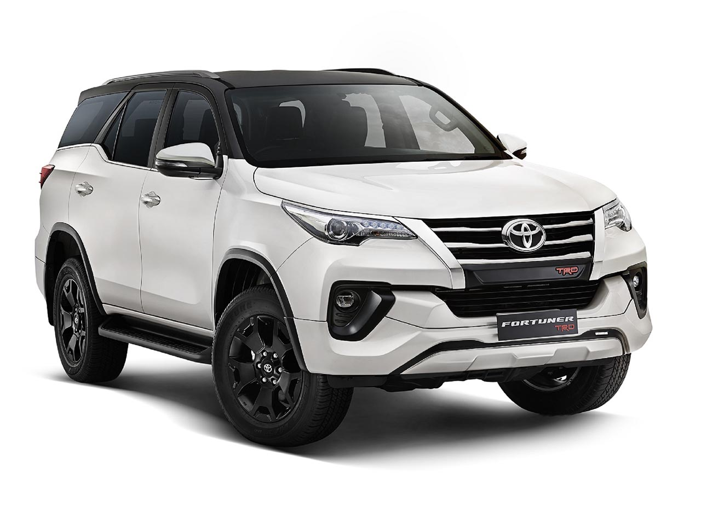

The Toyota Fortuner has 1 Diesel Engine and 1 Petrol Engine on offer. The Diesel engine is 2755 cc while the Petrol engine is 2694 cc . It is available with Automatic & Manual transmission.Depending upon the variant and fuel type the Fortuner has a mileage of . The Fortuner is a 7 seater 4 cylinder car and has length of 4795mm, width of 1855mm and a wheelbase of 2745mm.
-Some key specifications:
City mileage: 8.0kmpl
Engine Displacement: 2755
Max Power:201.15bhp@3000-3400rpm
Seating Capacity: 7
Fuel Type: Diesel
Transmission Type: Automatic
Boot Space: 296L
Service Cost: (Avg. of 5 years)Rs.6,344
No. of cylinder: 4
Max Torque (nm@rpm): 500Nm@1600-2800rpm
Fuel Tank Capacity: 80.0L
Ground Clearance Unladen: 225
Turbo Charged: Yes
Drive Type: 4WD
For more details you can visit the official website:
